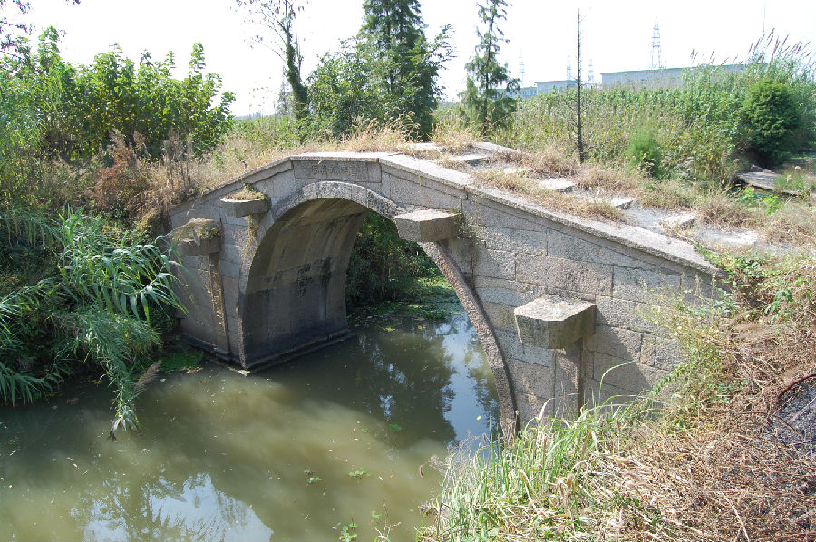

嘉兴市文物保护网 · 市级文物保护点 · 2020-11-06 · 原文

火炬村永兴桥位于嘉兴市秀洲区新塍镇火炬村3组。据桥身刻字知重建于民国十八年（1929年），据当地村民肖狗（63岁）回忆，此桥为嘉兴高公升酱园老板高酿山出资建造。南北跨蒲鞋浜，系单孔石拱桥，全长11.5米，宽1.9 5米，桥面由3块石块组成，矢高2.85米，拱跨5米，南北落坡由小石板纵列筑成石阶，南北各设4级和6级。东西有桥额“重建永兴桥”，旁镌刻小字“民国十八年”、“里人公立”。有桥联，东侧桥联“青龙□水德，玄地运文星”（其余因角度不佳无法辨识）。桥面定心石刻有水涡纹，桥身无纹饰。永兴桥造型美观，做工考究，保存较好，是当地重要的历史建筑，具有较高的历史和艺术价值。2010年公布为嘉兴市文物保护点。